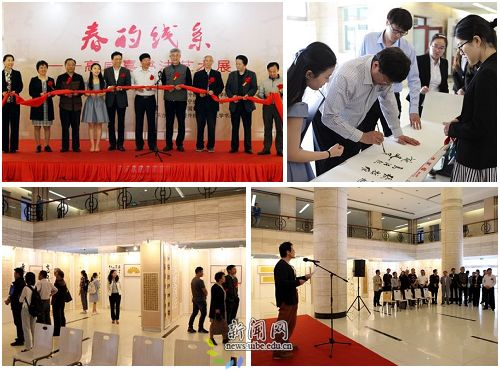
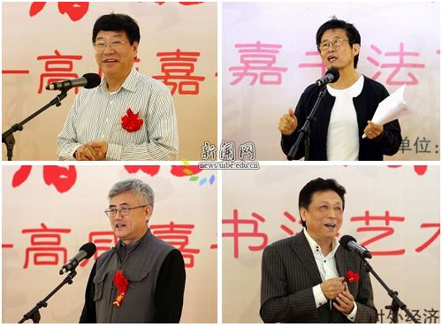
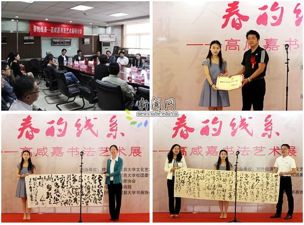
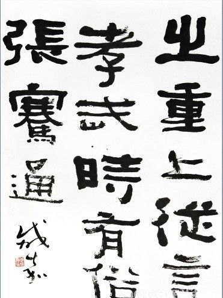
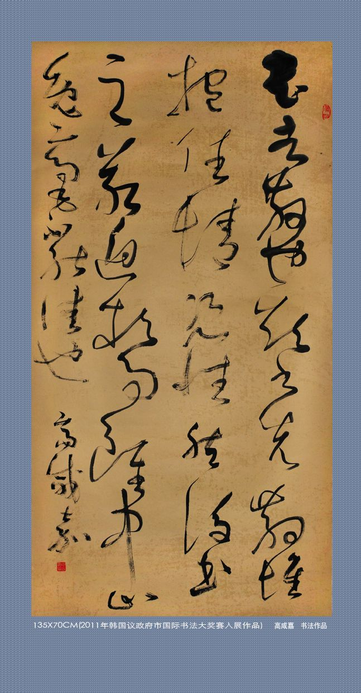
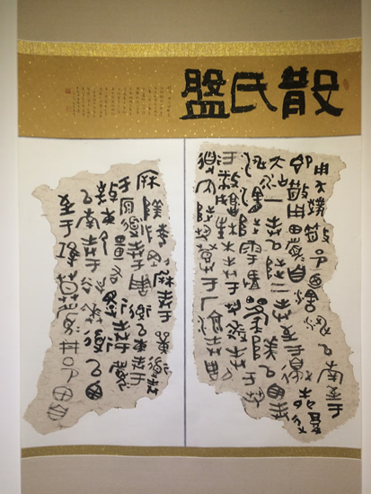
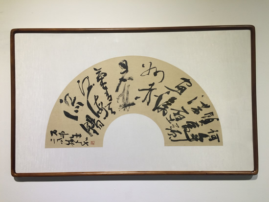
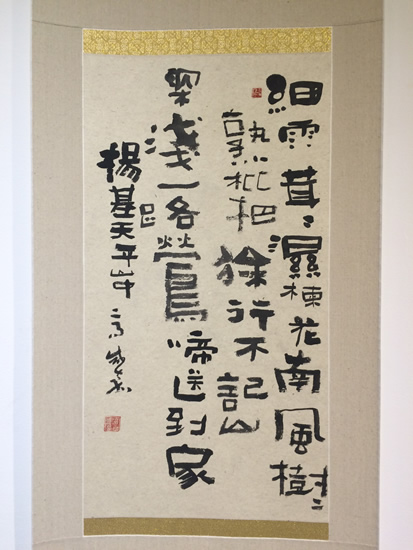
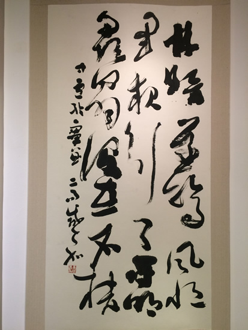
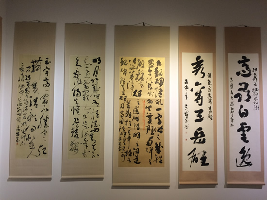

My Artist Career
Chinese Calligraphy
I am a professional artist specializing in Chinese calligraphy. Long before I began working with data and models, I learned to think through the movement of a brush. My formal training began in childhood under Nie Chengwen (聂成文), a leading contemporary cursive-script calligrapher, former vice chairman of the China Calligraphers Association, and current advisor to the Association.
My practice spans clerical (隶书), cursive (草书), regular (楷书), running (行书), and seal (篆书) scripts. I have studied the tradition through works including the San Shi Pan (散氏盘), Zhang Qian Bei (张迁碑), Zhang Menglong Bei (张猛龙碑), Wang Xizhi’s Shiqi Tie (十七帖), Lanting Xu (兰亭序), and Shengjiao Xu (圣教序), as well as Huaisu’s Zixu Tie (自叙帖). Clerical script remains the deepest foundation of my artistic language. Its square, forceful brushwork and monumental weight meet a distinctly northern Chinese temperament—direct, open, and unrestrained—to create a style marked by vigor, breadth, and grandeur (雄浑厚重，大气恢弘). In cursive work, I seek a different energy: the disciplined structure of the classics animated by changing ink, rhythm, and movement.
During my undergraduate years at the University of International Business and Economics, I also received generous support and sustained guidance from Professor Yongge Liu (刘咏阁), a calligrapher, painter, poet, and longtime arts educator at the university. His encouragement helped me deepen my practice and bring the solo exhibition Spring Lines to life. I later joined the Liaoning Calligraphers Association and published Xianjia Gao Calligraphy Collection. Calligraphy remains a living artistic practice—one that continues to shape how I observe, compose, and make decisions.
仰观宇宙之大，
俯察品类之盛。“Look up at the vastness of the universe; look down at the richness of all things.”
Wang Xizhi, Lantingji Xu
Why Wang Xizhi (王羲之)
Of all classical calligraphers, Wang Xizhi is the artist I return to most often. I admire not only the elegance of his line, but also the intelligence of his balance: restraint without stiffness, variation without disorder, and movement held together by structure.
His words from Lantingji Xu capture what I value in both art and inquiry—the ability to hold the whole in view while remaining attentive to the richness of each particular.
A distinctive week in Beijing
Two solo exhibitions, five days apart
In May 2016, I presented two solo exhibitions in Beijing. Spring Lines opened at the University of International Business and Economics on May 10; the university described it as its first solo exhibition by a current student in recent years. Xian · Ink opened five days later at Shengshi Tiankong Art Museum in the 798 Art District. At the first exhibition, I donated two works to the university library and its Department of Culture and Arts.
From Spring Lines



Photographs: University of International Business and Economics News
Selected Works
Selected works across scripts and formats. Click any image to see it at full size.







Images: encyclopedia archive and Sina Collection’s coverage of Xian · Ink
Exhibitions & Publication
- Xian · Ink
Shengshi Tiankong Art Museum, 798 Art District, Beijing · 2016 - Spring Lines
University of International Business and Economics, Beijing · 2016 - Secretary-General, Beijing University Painting and Calligraphy Federation · 2015–2016
- Published Xianjia Gao Calligraphy Collection · 2012
- Member, Liaoning Calligraphers Association · since 2008
Selected Recognition
- Excellence Award, First World Chinese Games Calligraphy and Painting Exhibition · 2011
- Two works selected, First Uijeongbu International Calligraphy Grand Exhibition · 2011
- Selected, National Work Safety Calligraphy and Painting Exhibition · 2011
- Selected, Second Liaoning Lanting Award Calligraphy Exhibition · 2007
- Gold Award, “Love My China” National Youth Calligraphy and Painting Biennale · 2006